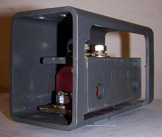
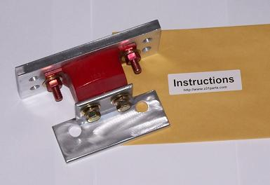

-
I e-mailed jason about it and have heard about ti happening to a couple other members.
Went to the track for the 3rd time ever today with this mount on. Did a quick spin at 5 grand nice and smooth put the clutch in and coasted to the staging lights. To my suprise the track official was telling me to stop and cut my engine. I get out look behind and see gear oil everywhere along with my drain plug. See my diff hanging down and pushed the car back to the pits..
My subframe looks twisted and the wheels are sitting inwerds, i dont know if my axles are trashed yet and the diff casing is completely cracked.
anyways i dont blame jason but either way it sucks as I probably cant afford to fix it ATM..
1989 300ZX 2+2 N/A GLL
Auto to Manual Swap
NA2T Complete
-
This is what sucks about aftermarket parts.
-
Poly crossmember bushings? Poly control arm bushings?The bullshit stops, when the GREEN light drops.
Only babies cry about the bottle. -
Did you notice any wheel hop while doing the burnout? I know quite a bit about this issue… But it never happened to me. Shiro Special # 981 Being assembled in my spare time Chromoly acquired!
Shiro Special # 981 Being assembled in my spare time Chromoly acquired!
Originally posted by BoostedMamma -
Right as it was winding down it hopped a few times.. I belive this was due to the diff mount breakingRacinjitter wrote: Did you notice any wheel hop while doing the burnout? I know quite a bit about this issue… But it never happened to me.
I have new OEM bushings.. when the rear end went on the car when my dad owned it the replaced them.. they are completely torn as of now from the subframe dipping down.. IIRC Keven had poly mounts in his and it snapped in the exact same fashion as mind did, even jason stated its a possible issue as its the weak point of the mount.
When i bought the mount last year jason recommended using his IRS bushings with it when i emailed him.. now i see he lists "must be used with them" as this was one of my concerns when purchasing it… Unfortunatly i cant find the email but he said it should be just fine.. my rear end was making a horrible clunk with my old mount and the new one solved this issue.. Also I belive jason pulled the poly diff stock due to this issue and trying to prevent further issues with customers.
The drain plug came out because when the diff mount broke and hit the ground it cracked the rear diff cover and diff casing causing the plug to just fall out .. Unlike kevin i did not have an exhaust to help keep it up
While I do believe poly bushings would have prolonged the use of the rear diff mount i think its inevitable that it would have happend without a completely solid drivetrain setup
Either way im out some coin for this which i dont know if i will be able to get the car back on the road this year…
Itd be nice if Jason could send me a new mount,due to this being now a known issue and him himself knowing its a little weak in that spot id imagine hed replace it for me.. if not oh well i dont have poly IRS bushings so its completely up to him.. either way i was under the impression id be fine without them from a convo i had with jason when i purchased it
I still think its a great product as it seems to be working for many people.. just a few of us go very unlucky
Untill jason comes out with a new revised mount I will probably go back to a stock one for now1989 300ZX 2+2 N/A GLL
Auto to Manual Swap
NA2T Complete
-
The use of OE rubber bushings (even new) is never recommended when using poly mounts. Poly engines should always be paired with poly transmission. Poly Diff always paired with poly crossmember and rear suspension bushings.Shady195 wrote:
While I do believe poly bushings would have prolonged the use of the rear diff mount i think its inevitable that it would have happend without a completely solid drivetrain setup
Itd be nice if Jason could send me a new mount,due to this being now a known issue and him himself knowing its a little weak in that spot id imagine hed replace it for me.. if not oh well i dont have poly IRS bushings so its completely up to him.. either way i was under the impression id be fine without them from a convo i had with jason when i purchased it
Im 99% certain that you didnt wheel hop because the diff mount broke, but broke the diff mount because you wheel hopped. More then likely the diff mount was stressed/fatigued and wheel hop is what finished it off.The bullshit stops, when the GREEN light drops.
Only babies cry about the bottle. -
Instead of the making the angle "L" portion of the mount in aluminum, swith the "L" to a 1/4" or even 5/16" thick steel.
Not hard to make, just need the length of each leg of the "L", and overall length, then decide on which thickness you want and drill holes as necessary and notch and contour as needed. Should hold up to torque alot better than aluminum.
1986 300ZX Turbo…sold
1990 Skyline GT-R…new money pit
2014 Juke Nismo RS 6-speed…daily -
[quote]ZFast88Z wrote:I agree,wheel hop destroys everything. I used my stock mount. I pressed it together in a vise and welded it solid. It works great.Originally posted by Shady195Black 1986 300zx Turbo coupe (Chuki)
http://z31performance.com/showthread…86-Turbo-Coupe
----------------------------------------------------------------------------------------------------------------
Pewter 1986 300zx N/A 2 Turbo 2+2 (Chuki)
http://z31performance.com/showthread…9;s-1986-300zx -
Like I stated before, When i talked to jason about my rear end issue when he directed me to the poly diff mount he said hed recommend using his IRS bushings with it but it should be fine without it… I belive this was before anyone had an issue with the bracket snapping at the "L"
However I do belive this would have happen regardless of weather or not I had poly bushings or not as Kevins snapped in the exact same fashion as mine did earlier this yea with his poly bushings. It would have just taken a little bit more of abuse before snapping.
.... Now at least I have a good reason to get underneath and change everything out and even possibly move to solid rear IRS mounts if I can find some. In the long run I'd like to have every mount in the car converted over to solid.
Like I said I don't blame Jason at all it happens especialy with products such as his which are not mass prodeuced and tried and tested liek some parts for bigger platforms are.1989 300ZX 2+2 N/A GLL
Auto to Manual Swap
NA2T Complete
-
I always recommend to everyone, solid crossmember, solid differential mount.
Virtually eliminates wheelhop, car feels MUCH more agile. -
This is what I did out of 3/8" steel L angle. 3/8" is WAY over kill, but it is what I had laying around. But again, as has been stated many times now, all of your mounting points should match in what they are mounted with.NissanEgg wrote: Instead of the making the angle "L" portion of the mount in aluminum, swith the "L" to a 1/4" or even 5/16" thick steel.
Not hard to make, just need the length of each leg of the "L", and overall length, then decide on which thickness you want and drill holes as necessary and notch and contour as needed. Should hold up to torque alot better than aluminum.
On a side note though. If you are using 3/8" aluminum L angle, it would be plenty strong as well, as the cover on the LSD is only made out of aluminum and not steel.85 Z31 6.0 LSX turbo 766whp/792wtq
04 GTO, LS6, big cam, porting, N20… underway for summertime daily driver. -
Yup, live and learn… there have been 3 reported failures out of the 100+ sold. While the stress should have been low enough and the AL thick/strong enough to not flex (and hence not fail) in normal conditions, the additional stress from stock crossmember bushings is a factor, as is wheel hop, driveline shock loads, or any other conditions. No excuses: the longer-term testing proved that the design needed revision. The new version of the diff mount is all steel, no aluminum and is a captured mount so it cannot fall free. We are offering a NO CHARGE replacement of the angle bracket for anyone who purchased one of the older mounts as well as a discount on upgrading to the new mount design. Have yet to send out e-mails to customers and put a notice on the website about it…
New version:

Old version:
 -
Overkill is good.Bolt on, fast, z31. You can only pick two.
Old weaksauce numbers: 391hp/433tq

-
If I'm using solid rear crossmember mounts should I use a poly diff mount or a solid diff mount?
Will either be OK?Shiro #443

-
You need to use a solid diff mount.Bolt on, fast, z31. You can only pick two.
Old weaksauce numbers: 391hp/433tq

Copyright © 2006–. All rights reserved. Privacy Policy